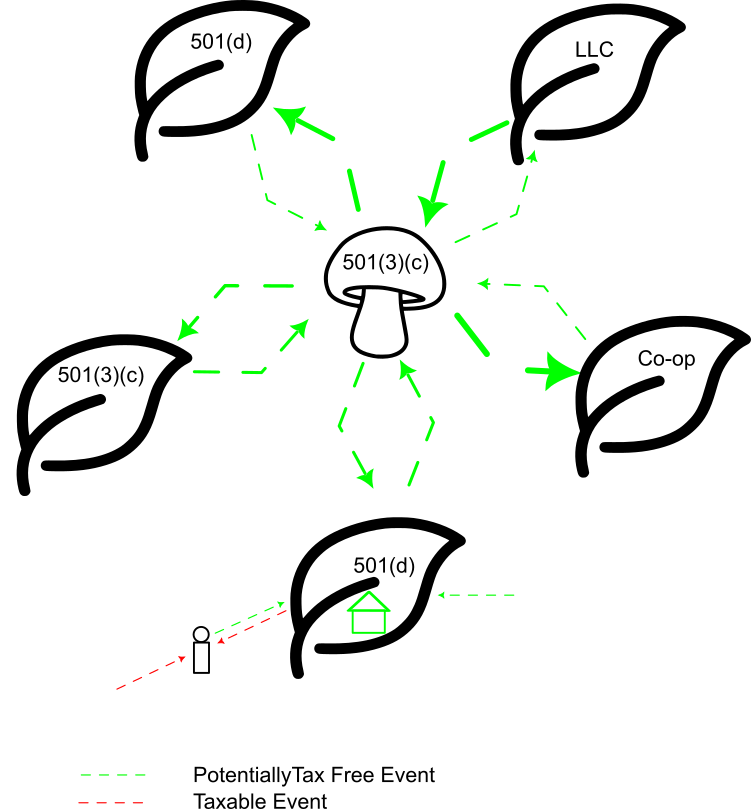

A regenerative ecosystem for community prosperity
Seeds, Plants & Mycelium (SPaM) — autonomous nodes, network canopy, and tax-aware legal flows
A world where economic security is a shared human right, supported through interconnected, regenerative communities. Stability emerges from shared prosperity and systemic support, not scarcity or centralization.
To create a cooperative ecosystem in which members pool resources, access predictable support, and enable network growth. Humus allows resources to flow transparently between communities (Plants), supporting both current members and the emergence of new nodes.
Humus is a network of autonomous communities (Plants) that pool resources, share labor, and propagate resilience through an interconnected network (Mycelium). Members (Seeds) contribute according to their means, receive equitable support, and may seed new nodes. The ecosystem leverages SPaM (Seeds, Plants, Mycelium) as an internal metaphor while operationalizing contributions, grants, and resource flows across 501(d) and 501(c)(3) structures, creating a tax-aware, legally compliant, and scalable network.
The Canopy is the Mycelium: the network connecting nodes, redistributing resources, supporting propagation, and weaving the whole ecosystem together.
Key principle: Some Seeds will flourish into Plants, others may fail, and resources from dormant or exited nodes recycle into the Mycelium to support new growth.
The network can include LLCs, co-ops, or informal collectives. Legal flexibility allows nodes to participate and receive support without all being formal 501(d)s. Tax and legal compliance are maintained by structuring transfers, grants, and resource allocations appropriately.

Core principle: The system balances autonomy, reciprocity, and propagation, allowing resource flows to follow ecological rules rather than strict proportionality.
Each community sets internal rules, labor contribution expectations, and dispute resolution mechanisms.
Provides network-level guidance, resource allocation formulas, and replication support; operates transparently and democratically.
Resource flows, rules, and eligibility criteria are visible to all members.
The system encourages seeding new Plants as the measure of growth rather than retention of members or resources.
This overview is descriptive, not individualized tax or legal advice.
Brand: Humus — fertile ground for human flourishing, growth, and shared prosperity.
Internal metaphor: SPaM — Seeds, Plants, Mycelium — propagation, interconnection, and systemic support.
Messaging: Regeneration, networked support, and community resilience.
Humus is more than a mutual aid network — it is a living ecosystem where Seeds grow into Plants, and the Mycelium connects communities for resilience and systemic prosperity. By combining autonomous nodes, network coordination, and SPaM-inspired flows, Humus transforms mutual aid from static resource sharing into self-propagating, regenerative support for human flourishing.
A parallel model to the Group Income Program — related goals, different structure.